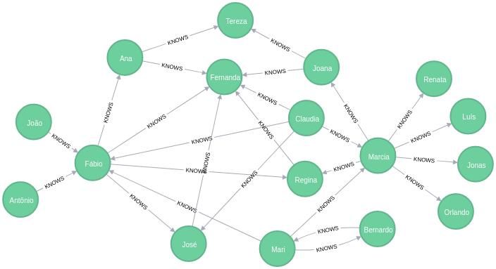
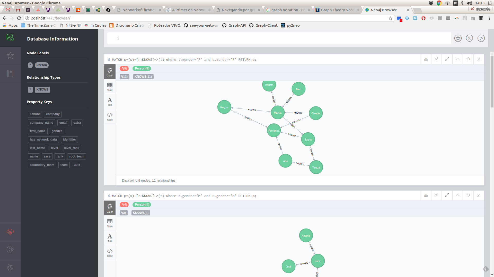
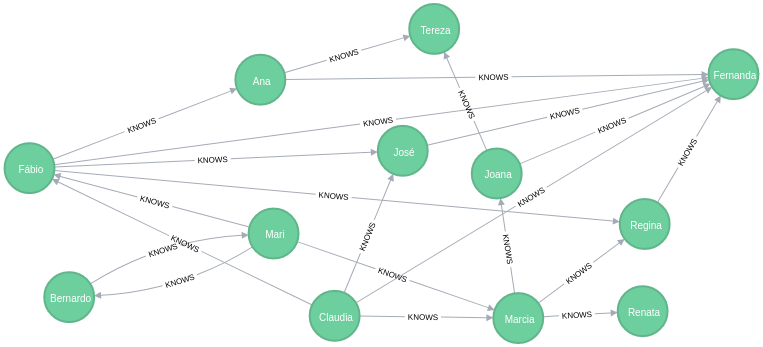
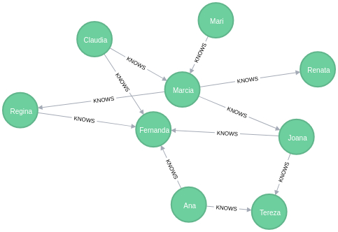
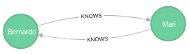

TDC 2017
Navegando por grafos com Python
Bernardo Fontes
São Paulo/SP
22 de Julho de 2017
## Roteiro
- Exemplo real
- Nosso exemplo
- Persistindo no banco
- Analisando as métricas
Network of Thrones
por Andrew Beveridge e Jie Shan
## Análise dos dados
- Grafo em que os **personagens são os nós**
- Nomes de **personagens** aparecendo a uma **distância de 15 palavras** gera uma **conexão** entre eles
## Métricas de centralidade
- **Degree centrality**: quantas conexões possui?
- **Eigenvector centrality**: quantas conexões com personagens **importantes**?
- **Betweenness Centrality**: são pontos de conexão de diferente partes do grafo?
- **SPOILER**: as métricas indicaram que **Tyrion é o protagonista**.
## Quando usar grafos?
- Quando o *domínio do problema* e o *entendimento dos dados* é muito mais atrelado a **como as entidades se relacionam** do que com suas mudanças de estado.
- Nosso grafo: pessoas que se conhecem
## Persistência: Neo4j
- Módulo **py2neo** para comunicação com o banco
- **Cypher** query languae == SQL do Neo4j
- **Bolt** é o protocolo de comunicação utilizado
## Criando a conexão
```python
from py2neo import Graph as Py2NeoGraph
graph_kwargs = {
'host': 'localhost',
'http_port': 7475,
'bolt_port': 7688,
}
graph = Py2NeoGraph(**graph_kwargs)
```
## Criando o grafo
```python
from py2neo import Node, Relationship
mari = Node('Person', name='Mari', gender='F')
bernardo = Node('Person', name='Bernardo', gender='M')
fabio = Node('Person', name='Fábio', gender='M')
rel1 = Relationship(mari, 'KNOWS', bernardo)
transaction = graph.begin()
transaction.create(mari)
transaction.create(bernardo)
transaction.create(fabio)
transaction.create(rel1)
trasaction.commit()
```
Grafo (17 nós e 26 arestas)

Brincando com o grafo

Recuperando o grafo via Cypher
MATCH
p=()-[r:KNOWS]->()
RETURN p;
Grafo de pessoas que conhecem mulheres
MATCH
p=()-[:KNOWS]->(target)
WHERE
target.gender = 'F'
RETURN p;

Grafo somente das mulheres
MATCH
p=(source)-[r:KNOWS]->(target)
WHERE
target.gender='F' AND source.gender='F'
RETURN p;

Pessoas que se conhecem mutuamente
MATCH
p=(source)-[r:KNOWS]->()-[:KNOWS]->(target)
WHERE
target.name = source.name
RETURN p;

## Analisando o grafo
- `networkx`: lib python para **processamento de grafo**
- Ler o grafo do Neo4J
- Popular um grafo do networkx
- Tirar as métricas
## Lendo o grafo do Neo4J
```python
from pprint import pprint
query = 'MATCH p=()-[r:KNOWS]->() RETURN p;'
data = graph.data(query)
pprint(data)
[{'p': (mari)-[:KNOWS]->(bernardo)},
{'p': (claudia)-[:KNOWS]->(`fábio`)},
{'p': (`antônio`)-[:KNOWS]->(`fábio`)},
{'p': (mari)-[:KNOWS]->(`fábio`)},
{'p': (`joão`)-[:KNOWS]->(`fábio`)},
......]
```
## O grafo no networkx
```python
nx_graph = nx.DiGraph() # grafo direcional
relationships = [d['p'] for d in data]
for relationship in relationships:
source, target = relationship.start_node(), relationship.end_node()
nx_graph.add_node(source['name'])
nx_graph.add_node(target['name'])
nx_graph.add_edge(source['name'], target['name'])
print('Nodes: {}'.format(nx_graph.number_of_nodes()))
print('Edges: {}'.format(nx_graph.number_of_edges()))
Nodes: 17
Edges: 26
```
## In-Degree centrality: mais famosos
```python
in_degree_centrality = nx.in_degree_centrality(nx_graph)
sorted(in_degree_centrality.items(), key=lambda x:x[1], reverse=True)
[('Fernanda', 0.375),
('Fábio', 0.25),
('José', 0.125),
('Marcia', 0.125),
('Tereza', 0.125),
('Regina', 0.125),
('Bernardo', 0.0625),
('Ana', 0.0625),
('Orlando', 0.0625),
('Jonas', 0.0625),
('Luís', 0.0625),
('Mari', 0.0625),
('Renata', 0.0625),
('Joana', 0.0625),
('Antônio', 0.0),
('João', 0.0),
('Claudia', 0.0)]
```
## Out-Degree centrality: mais conhecedor
```python
out_degree_centrality = nx.out_degree_centrality(nx_graph)
sorted(out_degree_centrality.items(), key=lambda x:x[1], reverse=True)
[('Marcia', 0.375),
('Fábio', 0.25),
('Claudia', 0.25),
('Mari', 0.1875),
('Ana', 0.125),
('Joana', 0.125),
('Bernardo', 0.0625),
('José', 0.0625),
('Antônio', 0.0625),
('João', 0.0625),
('Regina', 0.0625),
('Fernanda', 0.0),
('Orlando', 0.0),
('Jonas', 0.0),
('Luís', 0.0),
('Tereza', 0.0),
('Renata', 0.0)]
```
## Eigenvector centrality: gente influente
```python
eigenvector_centrality = nx.eigenvector_centrality(nx_graph)
sorted(eigenvector_centrality.items(), key=lambda x:x[1], reverse=True)
[('Fernanda', 0.8090398349558906),
('Tereza', 0.26967994498529685),
('Regina', 0.26967994498529685),
('Bernardo', 0.13483997249264842),
('Ana', 0.13483997249264842),
('José', 0.13483997249264842),
('Orlando', 0.13483997249264842),
('Jonas', 0.13483997249264842),
('Marcia', 0.13483997249264842),
('Fábio', 0.13483997249264842),
('Renata', 0.13483997249264842),
('Mari', 0.13483997249264842),
('Luís', 0.13483997249264842),
('Joana', 0.13483997249264842),
('Antônio', 0.0),
('João', 0.0),
('Claudia', 0.0)]
```
## Betweenness centrality: proxies entre grupos
```python
betweenness_centrality = nx.betweenness_centrality(nx_graph)
sorted(betweenness_centrality.items(), key=lambda x:x[1], reverse=True)
[('Fábio', 0.08333333333333333),
('Marcia', 0.075),
('Mari', 0.05),
('Ana', 0.01875),
('Joana', 0.0125),
('Regina', 0.0020833333333333333),
('Bernardo', 0.0),
('José', 0.0),
('Fernanda', 0.0),
('Antônio', 0.0),
('Orlando', 0.0),
('Jonas', 0.0),
('Luís', 0.0),
('Tereza', 0.0),
('João', 0.0),
('Renata', 0.0),
('Claudia', 0.0)]
```
## Conclusões
- NoSQL **não** é uma estratégia para todos os problemas
- A persistência com o py2neo é **chata**
- Controle suas **transações no banco manualmente**
- O módulo do **networkx** já tem 99% do que você precisa
- Saiba quais **perguntas** fazer e quais **métricas** as respondem